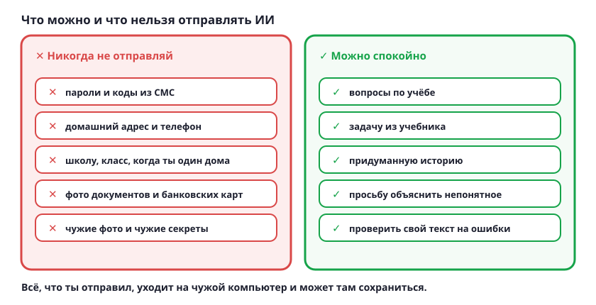

Что нельзя отправлять ИИ
Всё, что ты напишешь в чат, уходит на чужой компьютер и может там сохраниться. Поэтому личное туда не отправляют.

Стоп-список
- Пароли и коды из СМС. Никогда и никому: ни человеку, ни ИИ. Настоящему помощнику твой пароль не нужен.
- Домашний адрес и телефон. Тоже номер школы, класс и когда ты дома один. Это не для чужих.
- Фото документов и банковских карт. Паспорт родителей, карта, справка — ничего этого в чат не загружают.
- Чужие тайны и чужие фото. Про друзей и родных нельзя рассказывать без их разрешения, даже если это просто смешная история.
- Загрузить файл — это тоже отправить. Правило одинаковое и для текста, и для картинки, и для документа.
А это можно спокойно
- Вопросы по учёбе и задачи из учебника, если в них нет твоих личных данных.
- Попросить объяснить непонятное правило или проверить твой текст на ошибки.
- Придумать историю, стихотворение или идеи для проекта.
Попробуй сам: придумай, как попросить помощь с задачей про твой класс, не называя ни школу, ни фамилию, ни имена одноклассников. Покажи вариант родителям.
Помнишь правило из урока про безопасность: незнакомцам о себе ничего не рассказывают? ИИ — тоже незнакомец.